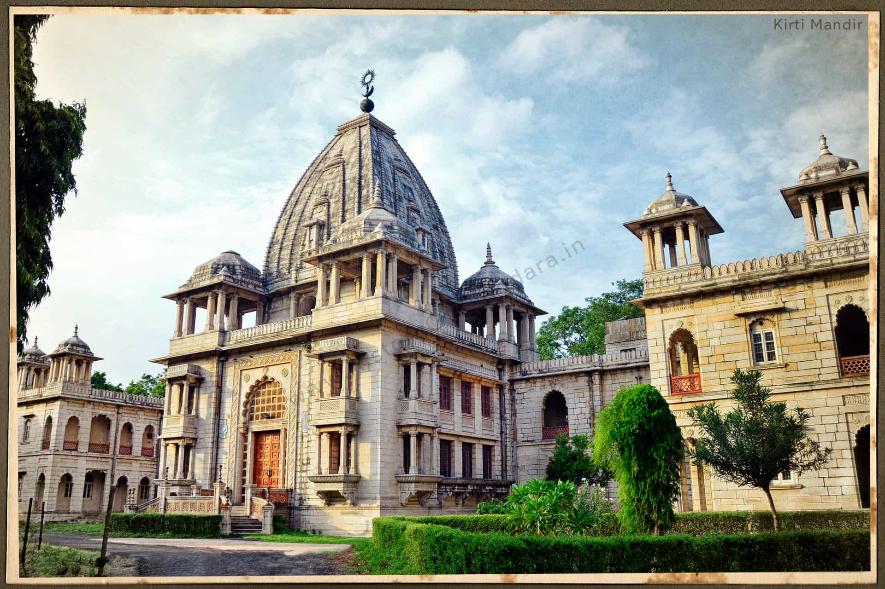

The royal mausoleum of the Gaekwad dynasty, Kirti Mandir, is one of the most stunning but understated buildings in Baroda. Situated in the heart of the city, it was built in honour of Maharaja Sayajirao Gaekwad III's silver jubilee celebration in 1936. The building is E-shaped and features beautiful architectural features like balconies, terraces, tombs, domes and a brilliantly carved 35 metres high central shikhara. The interiors have murals by Nandalal Bose, based on themes like Gangavataran, Life of Meera, the battle of Mahabharat and Natir Poojan and some rare paintings from the famous artist Raja Ravi Varma.
Brief History
It is said that Sayajirao Maharaja built Kirti Mandir in the memory of deceased members of the royal Gaekwad family, leaving the edifice to be dedicated to Lord Mahadev. It was part of the many structures that the Maharaja commissioned. The golden era in the Maratha rule of Baroda started when Sayajirao Maharaja came into power in 1875 and brought a number of changes to the city.

How to Get There?
By Road
NH8 passes through Baroda, making it well connected by road as well.
By Train
The city lies on the busy Mumbai-Delhi Western Railway Mainline and is well connected by premium trains like Shatabdi and Rajdhani.
By Air
Domestic flights connect Vadodara (BDQ) to major cities in India.